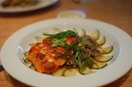
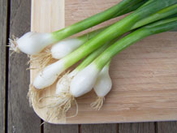
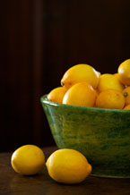
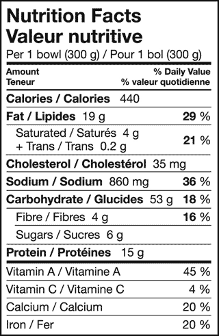

Awesome Haus Salmon
Cooking Instructions

Create the glaze by whisking together the miso paste, brown sugar, soy sauce, lemon juice, and Mirin. Make sure you whisk quickly, but not too quickly that you separate the miso paste and ruin the flavor. Temper your whising by placing the bowl in your lap and whisking in a circular motion with your elbow in the air and your fore arm pointing straight down. At this poing you want to set your oven to broil and let it heat up for about 10 - 20 minutes. Place the salmon filet your biggest roasting pan and carefully coat the top with the glaze. Make sure that the extra glaze does not run off onto the broilder pan as it will burn and make the salmon bitter. Carefully place the pan in the oven and broil the filet for 10-15 minutes or until the filet reaches an internal tempurature of 140 degrees. Do not let the salmon cross 150 degres as it will become tough and rubbery. Remove the filet from the broiler and let cool for 5 minutes to let the carry over of the tempurature finish cooking. Finally top with the green onions. Serve with rice and stir-fried veggies.
Ingredients and Nutritional Information


- 2 tablespoons Miso Paste
- 2 teaspoons Soy Sauce
- 2 tablespoons Lemon Juice
- 1 tablespoon Mirin
- 1 Salmon Filet (skin removed)
- 1/2 cup Green Onion (chopped)
